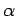
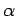

Inhalt Index DeskTop Bronstein

 Wahrscheinlichkeitsrechnung und Mathematische Statistik Mathematische Statistik Wichtige Prüfverfahren Vertrauensgrenzen für den Mittelwert
Wahrscheinlichkeitsrechnung und Mathematische Statistik Mathematische Statistik Wichtige Prüfverfahren Vertrauensgrenzen für den Mittelwert


Wenn die Streuung  der Grundgesamtheit unbekannt ist, dann ersetzt man sie durch die Stichprobenstreuung s2 und erhält an Stelle von (16.138) die Zufallsvariable
der Grundgesamtheit unbekannt ist, dann ersetzt man sie durch die Stichprobenstreuung s2 und erhält an Stelle von (16.138) die Zufallsvariable
| (16.141) |
die der t-Verteilung mit m=n-1 Freiheitsgraden genügt. Dabei ist n der Umfang der Stichprobe. Mit einer vorgegebenen Irrtumswahrscheinlichkeit  gilt dann
gilt dann
Aus (16.143) folgt , wobei das Quantil der t-Verteilung (mit n - 1 Freiheitsgraden) zur Irrtumswahrscheinlichkeit darstellt (Tabelle STUDENT-Verteilung). Aus folgt
Die Werte heißen Vertrauensgrenzen für den Mittelwert  der Grundgesamtheit bei unbekannter Streuung
der Grundgesamtheit bei unbekannter Streuung  und vorgegebener Irrtumswahrscheinlichkeit .
und vorgegebener Irrtumswahrscheinlichkeit .
| Beispiel |
|
Eine Stichprobe bestehe aus den folgenden 6 Meßwerten: 0,842; 0,846; 0,835; 0,839; 0,843; 0,838. Daraus erhält man und
|